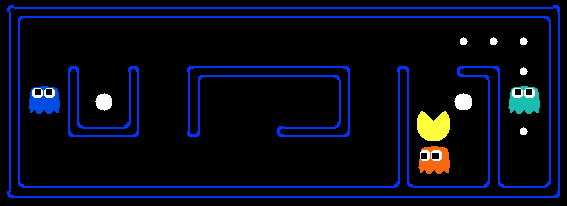

Pacman seeks reward.
Should he eat or should he run?
When in doubt, Q-learn.
In this lab, you will implement value iteration and Q-learning. You will test your agents first on Gridworld (from class), then apply them to a simulated robot controller (Crawler) and Pacman.
As in previous labs, this lab includes an autograder for you to grade your solutions on your machine. This can be run on all questions with the command:
python autograder.py
It can be run for one particular question, such as q2, by:
python autograder.py -q q2
It can be run for one particular test by commands of the form:
python autograder.py -t test_cases/q2/1-bridge-grid
See the autograder tutorial in Lab 0 for more information about using the autograder. The code for this lab contains the following files, which are available in a zip archive lab-3-reinforcement.zip
Files you’ll edit:
| file | purpose |
|---|---|
valueIterationAgents.py |
A value iteration agent for solving known MDPs. |
qlearningAgents.py |
Q-learning agents for Gridworld, Crawler and Pacman. |
analysis.py |
A file to put your answers to questions given in the Lab. |
Files you should read but NOT edit:
| file | purpose |
|---|---|
mdp.py |
Defines methods on general MDPs. |
learningAgents.py |
Defines the base classes ValueEstimationAgent and QLearningAgent, which your agents will extend. |
util.py |
Utilities, including util.Counter, which is particularly useful for Q-learners. |
gridworld.py |
The Gridworld implementation. |
featureExtractors.py |
Classes for extracting features on (state,action) pairs. Used for the approximate Q-learning agent (in qlearningAgents.py). |
Files you can ignore:
| file | purpose |
|---|---|
environment.py |
Abstract class for general reinforcement learning environments. Used by gridworld.py. |
graphicsGridworldDisplay.py |
Gridworld graphical display. |
graphicsUtils.py |
Graphics utilities. |
textGridworldDisplay.py |
Plug-in for the Gridworld text interface. |
crawler.py |
The crawler code and test harness. You will run this but not edit it. |
graphicsCrawlerDisplay.py |
GUI for the crawler robot. |
autograder.py |
Lab autograder |
testParser.py |
Parses autograder test and solution files |
testClasses.py |
General autograding test classes |
test_cases/ |
Directory containing the test cases for each question |
reinforcementTestClasses.py |
Lab 3 specific autograding test classes |
Files to Edit and Submit: You will fill in portions of valueIterationAgents.py, qlearningAgents.py, and analysis.py during the assignment. You should submit these files with your code and comments. Please do not change the other files in this distribution or submit any of our original files other than these files.
Evaluation: Your code will be autograded for technical correctness. Please do not change the names of any provided functions or classes within the code, or you will wreak havoc on the autograder. However, the correctness of your implementation – not the autograder’s judgements – will be the final judge of your score. If necessary, we will review and grade assignments individually to ensure that you receive due credit for your work.
Academic Dishonesty: We will be checking your code against other submissions in the class for logical redundancy. If you copy someone else’s code and submit it with minor changes, we will know. These cheat detectors are quite hard to fool, so please don’t try. We trust you all to submit your own work only; please don’t let us down. If you do, we will pursue the strongest consequences available to us.